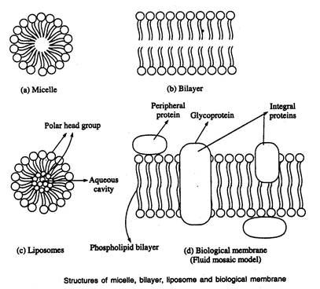

BIC 101 :: Lecture 10 :: PHYSICAL CONSTANTS

- Since different oils have different specific gravity, any variation from normal value shows mixture of oils.
ii. Refractive index
- Fats have definite angles of refraction.
- Variation from the normal value indicates adulteration of fats or oils.
iii. Solidification point or setting point
- Solidification point is the temperature at which the fat after being melted, sets back to solid or just solidifies.
- Each fat has a specific solidification point.
Chemical constants
i. Saponification number
- It is defined as milligrams of KOH required to saponify 1 gm of fat or oil.
- Saponification number is high for fat or oil containing low molecular weight or short chain fatty acids and vice versa.
- It gives a clue about the molecular weight and size of the fatty acid in the fat or oil.
ii. Iodine Number
- It is defined as the number of grams of iodine taken up by 100 grams of fat or oil.
- Iodine number is a measure of the degree of unsaturation of the fatty acid.
- Since the quantity of the iodine absorbed by the fat or oil can be measured accurately, it is possible to calculate the relative unsaturation of fats or oil.
iii. Reichert-Meisel number (R.M.number)
- This is a measure of the volatile soluble fatty acids.
- It is confined to butter and coconut oil.
- It is defined as the number of millilitres of 0.1 N alkali required to neutralise the soluble volatile fatty aicds contained in 5 gm of fat.
- The determination of Reichert-Meisel number is important to the food chemist because it helps to detect the adulteration in butter and ghee.
- Reichert-Meisel value is reduced when animal fat is used as adulterant in butter or ghee.
iv. Polanski number
- Ghee may be adulterated by the addition of insoluble, non-volatile fatty acids (by addition of animal fat).
- This can be tested by finding out the Polanski number.
- It is defined as the number of millilitres of 0.1 N potassium hydroxide solution required to neutralise the insoluble fatty acids (not volatile with steam distillation) obtained from 5 gm of fat.
v. Acetyl number
- It is defined as the amount in millilitres of potassium hydroxide solution required to neutralise the acetic acid obtained by saponification of 1 gm of fat or oil after acetylation.
- Some fatty acids contain hydroxyl groups. In order to determine the proportion of these, they are acetylated by means of acetic anhydride.
- This results in the introduction of acetyl groups in the place of free hydroxyl groups.
- The acetic acid in combination with fat can be determined by titration of the liberated acetic acid from acetylated fat or oil with standard alkali.
- Acetyl number is thus a measure of the number of hydroxyl groups present in fat or oil.
vi. Acid number
- It is defined as the milligram of potassium hydroxide required to neutralise the free fatty acids present in one gram of fat or oil.
- Acid number indicates the amount of free fatty acids present in fat or oil.
- The free fatty acid content increases with age of the fat or oil.
Molecular aggregation of phospholipids
- Glycerophospholipids are virtually insoluble in water.
- Depending on the precise conditions and the nature of lipids used, three types of lipid aggregates can form when amphipathic lipids are mixed with water.
Micelles
- Free fatty acids, lysophospholipids and sodium dodecyl sulphate (SDS) form micelle.
- Micelles are relatively small spherical structures involving a few dozen to few thousand molecules arranged so that their hydrophobic regions aggregate in the interior excluding water and their hydrophilic head groups are at the surface in contact with water.
- This molecular arrangement eliminates unfavourable contacts between water and the hydrophobic tails
Bilayer
- A second type of lipid aggregate in water is the bilayer in which two lipid monolayers combine to form a two dimensional sheet.
- The hydrophobic portions in each monolayer interact excluding water.
- The hydrophilic head groups interct with water at the two surfaces of the bilayer lipid bilayers form the structural basis of biological membranes

Liposomes
- The third type of lipid aggregate is formed when a lipid bilayer folds back on itself to form a hollow sphere called a liposome or vesicle.
- These bilayer vesicles enclose water creating a separate aqueous compartment
Biological membranes
- Proteins and polar lipids account for mass of biological membranes.
- The relative proportions of protein and lipid differ in different membranes, reflecting the diversity of biological roles.
- Amphipathic molecules form a lipid bilayer with the non polar region of lipids facing outward.
- In this lipid bilayer, globular proteins are embedded at regular intervals held by hydrophobic interactions.
- Some proteins protrude from one or other face of the membrane (peripheral proteins); some span its entire width (integral proteins).
- The individual lipid and protein subunits in a membrane form a fluid mosaic
- The membrane is fluid because the interactions among lipids, between lipids and proteins are non covalent, leaving individual lipid and protein molecules free to move laterally.
- One of the key functions of a membrane is to control the passage of substances across it.
- They are said to be selectively permeable. The different membranes of the cell have different selective permeabilities.
| Download this lecture as PDF here |